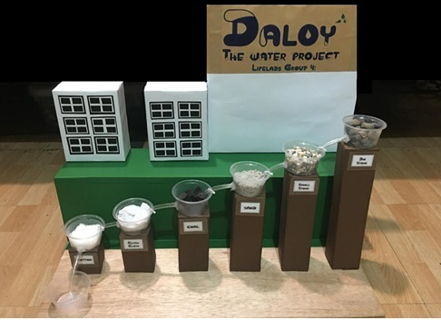
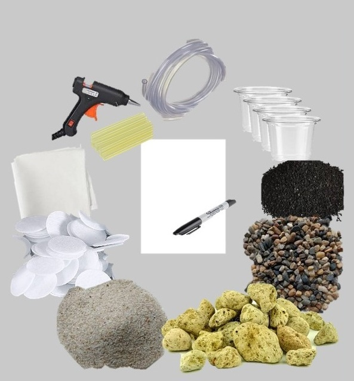

KNOW MORE ABOUT ME
Meet our model name DALOY
Hello! My name is DALOY, and I am a project idea that hopes to bring clean and accessible water to people living in rural areas. I believe water is life, and everyone deserves to have it every day.
DALOY is not just a name—it stands for values that guide this project:
- D – Daloy (Flow): Water should always flow and be available.
- A – Alaga (Care): Taking care of our people and our environment.
- L – Linis (Cleanliness): Clean water means good health and safety.
- O – Oportunidad (Opportunity): With water, people can live better lives
- Y – Yaman (Resource): Water is a treasure, and we must protect it.
WHAT IS DALOY
The Water Project - DALOY is a prototype filtration design to address challenges in water problem. The name DALOY, which means "flow" in Filipino reflects its purpose providing cleaner and more usable water design to help AFAs. The prototype features a six-stage filtration design that progressively enhance the overall water clarity.
DESIGN THINKING PROCESS
| Topic | Description |
|---|---|
| EMPHATIZE | Pollution hurts not just our environment but all of us, When the air is polluted, and water turns dirty, animals and humans suffering from environmental pollution, it is sad that our planet is suffering because of waste not being disposed of properly, it reminds us that we have to care about the earth, and keep it alive, to do our part so that earth doesn't have to suffer anymore. |
| DEFINE | Rural communities face unsafe water due to pollution, making it hard for AFA learners and families to access clean water for farming, fishing, and daily life. The challenge is how we can ensure safe and sustainable water for both learning and livelihood |
| IDEATE | We arrived at this solution to AFA by thinking of multiple strategies like the |
| PROTOTYPE | The filtration process can be visualized as water moving downward through the following layers: Dirty Water In ↓ Big Stones - it removes larger particles and provides structural support. ↓ Small Stones - filters medium size particles and adds another layer of sediment control ↓ Sand - it serves as fine filtration of small particles ↓ Charcoal - this layers should absorb impurities, odor and chemicals ↓ Clean Cloth - it acts as a pre-filter to trap small sediments and prevent possible clogging next layers. ↓ Cotton - polishes the water and catches any remaining fine particles. This stage ensures clarity before collection. Clean Water Out At present, the prototype has been tested for non-potable purposes, such as cleaning and general utility, It has not yet been certified for human consumption, and further testing is required to validate its safety for drinking water. |
| TESTING | To validate the functionality of the DALOY water filtration model, a testing phase will be conducted and documented through a video demonstration. This video will showcase the filtration process from dirty water to clean output. |
MATERIALS FOR THE PROJECT

PROTOTYPE TESTING
Version 2.0: Working Model
References
1. The Institute for Environmental Research and Education2. Atlas Scientist - Water Pollution Solutions
3. Green Coast - Ways to Reduce Water Pollution
4. Icons and Images
5. How to put an HTML website online (on the Internet) SuperSimpleDev
6. Free Website Templates
7. HTML Tutorial